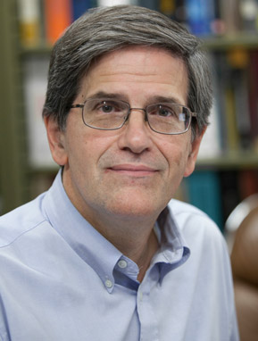

In compiling this year’s annual report, we couldn’t help but marvel at the scope of the Wisconsin Energy Institute’s reach in 2014. This year, perhaps more than any other, we made good on our goal of becoming international leaders in clean energy research and outreach. Whether educating students on energy issues, studying public policy, engaging with industry, or developing the technologies that will transform the energy market, we put more weight than ever into solving the world’s energy problems.
WEI’s mission to foster collaborative energy projects was taken up by hundreds of researchers at the University of Wisconsin–Madison and its partnering institutions. The diverse group of researchers at the Great Lakes Bioenergy Research Center (GLBRC), for example, strengthened their status as internationally recognized experts in bioenergy, publishing two research papers in Nature and two in Science, and filing their 100th patent application.
